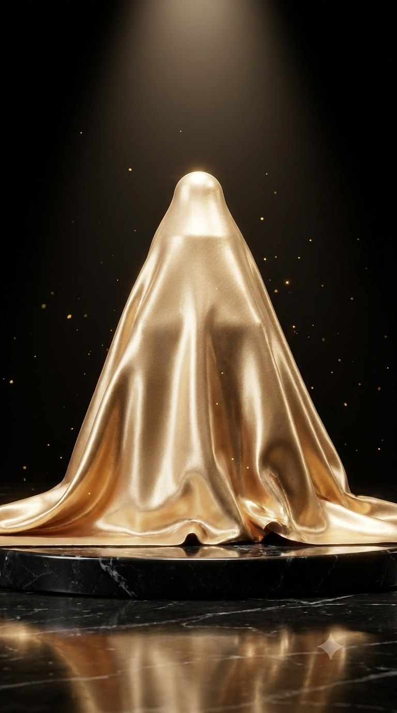

오늘의 프롬프트AI로사쌤 · 11번
금빛 실크가 걷히는 제품 공개 영상
제품 사진 한 장으로 광고 사진을 만들고, 그 사진으로 영상까지 만드는 두 단계예요. 어떤 제품이든 쓸 수 있어요.
1단계광고 사진 만들기

제미나이나 챗GPT에 내 제품 사진을 먼저 올리고, 아래 프롬프트를 붙여넣으세요.
업로드한 이미지 속 제품을 사용한 실사 고급 광고 사진. 제품은 형태, 비율, 색상, 라벨 디자인, 인쇄된 글자를 바꾸지 말고 다시 디자인하지 말 것.
장면: 검은 대리석 단상 위에 제품 1개가 놓여 있고, 그 위를 광택이 흐르는 샴페인 골드 실크 천이 완전히 덮고 있어 제품의 윤곽만 천 아래로 은은하게 드러남. 실크의 부드러운 주름과 물결 같은 광택, 단상 표면에 비친 반영, 공중에 떠다니는 고운 금빛 입자.
조명과 구도: 짙은 검정 배경, 위에서 한 줄기로 떨어지는 스포트라이트와 실크 주름을 살리는 측면광, 정면 눈높이의 클로즈업.
고해상도 4K 실사, 실크의 올과 광택·대리석 무늬까지 선명하게, 사람과 손은 나오지 않음, 이미지 안에 글자·로고·워터마크 없음, 세로 9:16.
2단계광고 영상 만들기
1단계에서 만든 사진을 영상 도구에 첫 장면으로 올리고, 내 제품 사진도 함께 올린 뒤 아래 프롬프트를 붙여넣으세요. 천 속 제품이 안 보이기 때문에 제품 사진이 꼭 필요해요.
실크가 걷힌 뒤 드러나는 제품은 업로드한 제품과 형태, 색, 라벨, 인쇄된 글자가 똑같아야 하며 일그러지거나 바뀌지 않게. 사람과 손은 나오지 않음.
0~3초: 스포트라이트 아래에서 실크 천이 미풍에 잔잔하게 물결치고 금빛 입자가 천천히 떠다님. 카메라는 아주 천천히 다가감.
3~7초: 보이지 않는 바람이 실크를 위로 들어 올려 천이 슬로모션으로 한쪽으로 미끄러지듯 흘러내리고, 아래에 있던 제품이 윗부분부터 차례로 드러남.
7~10초: 실크가 단상 아래로 완전히 흘러내려 바닥에 우아하게 쌓이고, 제품이 스포트라이트 한가운데에 또렷하게 서 있음. 제품 표면을 따라 빛이 한 번 반짝 훑고 지나가며 카메라가 줌 인해 라벨을 보여주고 마무리.
소리: 낮고 웅장한 현악기 음, 실크가 스르륵 미끄러지는 소리, 공개 순간의 맑은 종소리 한 번. 사람 목소리 없음.
4K 고해상도 실사 영상, 10초 원테이크, 천의 움직임은 물리적으로 자연스럽게, 화면에 자막이나 새로운 글자·로고 없음.
출처 · AI로사쌤